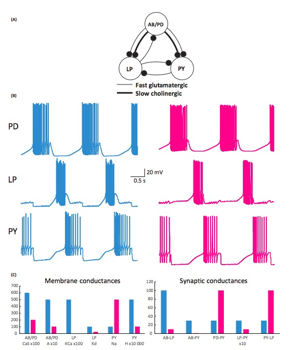

knitr::include_graphics("img/psych-harder-1.jpg")
“If understanding everything we need to know about the brain is a mile, how far have we walked?”
– Jeff Lichtman


knitr::include_graphics("img/psych-harder-1.jpg")
knitr::include_graphics("img/psych-harder-2.jpg")

knitr::include_graphics("https://source.wustl.edu/wp-content/uploads/2013/08/ColeCoverFlexHub470x340.jpg")
knitr::include_graphics("https://stats.idre.ucla.edu/wp-content/uploads/2016/02/sem_1.png")
knitr::include_graphics("img/calabrese-2018.jpg")
knitr::include_graphics("https://i.stack.imgur.com/3B00P.png")
knitr::include_graphics("https://media.springernature.com/full/springer-static/image/art%3A10.3758%2Fs13414-019-01760-1/MediaObjects/13414_2019_1760_Fig1_HTML.png?as=webp")knitr::include_graphics("https://media.springernature.com/full/springer-static/image/art%3A10.3758%2Fs13414-019-01760-1/MediaObjects/13414_2019_1760_Fig8_HTML.png?as=webp")“The brainwide representation of behavioral variables suggests that information encoded nearly anywhere in the forebrain is combined with behavioral state variables into a mixed representation…Our data indicate that it happens as early as primary sensory cortex.”
“Psychological sciences have identified a wealth of cognitive processes and behavioral phenomena, yet struggle to produce cumulative knowledge. Progress is hamstrung by siloed scientific traditions and a focus on explanation over prediction, two issues that are particularly damaging for the study of multifaceted constructs like self-regulation…We conclude that self-regulation lacks coherence as a construct…”
Swanson, L. W., & Lichtman, J. W. (2016). From Cajal to Connectome and Beyond. Annual Review of Neuroscience, 39, 197–216.
knitr::include_graphics("https://www.annualreviews.org/na101/home/literatum/publisher/ar/journals/content/neuro/2016/neuro.2016.39.issue-1/annurev-neuro-071714-033954/20160711/images/large/ne390197.f1.jpeg")
knitr::include_graphics("https://www.annualreviews.org/na101/home/literatum/publisher/ar/journals/content/neuro/2016/neuro.2016.39.issue-1/annurev-neuro-071714-033954/20160711/images/medium/ne390197.f2.gif")
knitr::include_graphics("https://www.annualreviews.org/na101/home/literatum/publisher/ar/journals/content/neuro/2016/neuro.2016.39.issue-1/annurev-neuro-071714-033954/20160711/images/medium/ne390197.f3.gif")
knitr::include_graphics("https://www.annualreviews.org/na101/home/literatum/publisher/ar/journals/content/neuro/2016/neuro.2016.39.issue-1/annurev-neuro-071714-033954/20160711/images/large/ne390197.f4.jpeg")
“The so-called explanatory gap (Horgan 1999) between what we can know and what we want to understand is not necessarily made smaller by more information. Rather, such omics information pushes neuroscience into a different realm where information rather than ideas is the currency.”
“In this realm, a detailed, bottom-up description of a biological system is mined for whatever conceptual insights might be revealed rather than top-down concepts of what we care about being used as a setup for experiments. In this sense, the data give us a more accurate view of the way things are and, at the same time, push us away from intelligible, albeit facile, answers to the enduring puzzles of the brain.”
knitr::include_graphics("https://raw.githubusercontent.com/psu-psychology/psy-511-scan-fdns-2017/master/lectures/img/swanson-2005-fig-1.jpg")
knitr::include_graphics("https://raw.githubusercontent.com/psu-psychology/psy-511-scan-fdns-2017/master/lectures/img/swanson-2005-fig-3.jpg")